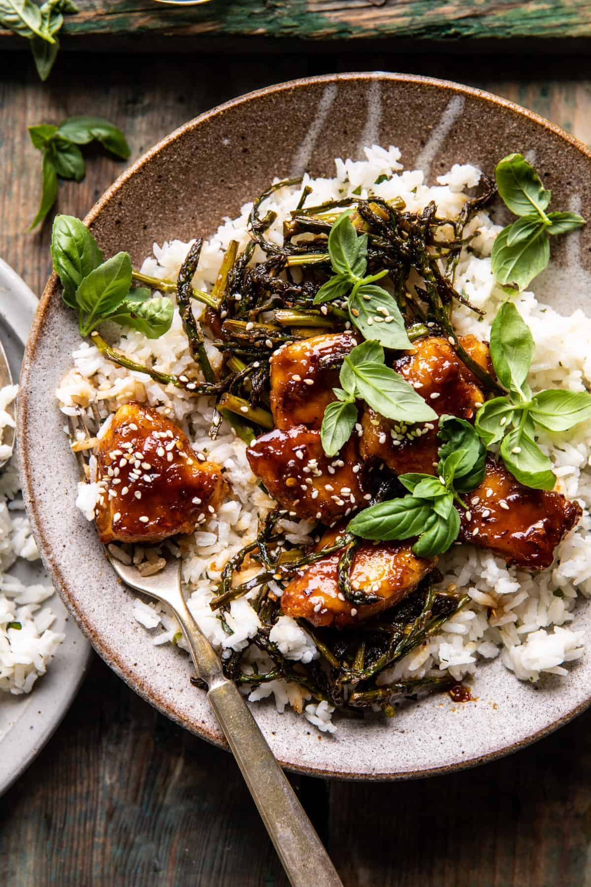

Apricot Chicken | Odin Recipes

Description
My mother-in-law bought my wife and I a cookbook by Tieghan Gerard (of
Half-Baked Harvest just before we got married. We've always loved cooking together, so this
cookbook is a nostalgic source of inspiration that we'll pull out for special occasions!
I love how Tieghan puts an unorthodox twist on classic, feel-good staples, and her Sticky Apricot Chicken
exemplifies this culinary bent perfectly! A savory and fruity dish that is also easy to prepare, Apricot Chicken might just
become your go-to when you want to give your Northern friends a friendly taste of the South.
Note: This recipie is copied verbatim from the
Half-Baked Harvest
blog. If this sounds delicious, you should check out Tieghan's other recipes - there's a lot
more where this came from!
Ingredients
- 1 1/2 pounds boneless chicken breasts, cut into 2 inch cubes
- 1 large egg, beaten
- tablespoons all-purpose flour, or gluten-free flour
- kosher salt and black pepper
- 3/4 cup high quality apricot preserves
- 1/4 cup low sodium soy sauce
- 2 tablespoons balsamic vinegar
- 2 cloves garlic, finely chopped or grated
- 1 inch fresh ginger, grated
- 1/2 - 1 teaspoon red pepper flakes
- 1 bunch asparagus, or broccoli - chopped (see note)
- 1/4 cup fresh basil leaves
- sesame seeds and rice, for serving
Steps
- Preheat the oven to 475° F. Line a baking sheet with parchment paper or grease with oil.
- Add the chicken, egg, and a pinch of pepper to a bowl. Toss to combine. Add the flour to another bowl. Dredge the chicken in batches through the flour, tossing to coat. Place the chicken on one side of the prepared baking sheet. Drizzle with olive oil. Bake for 12 minutes. Flip the chicken, then add the asparagus to the other side of the pan. Toss with 1 tablespoon oil, salt, and pepper. Return to the oven another 5 minutes, until the chicken is cooked through. Reduce the oven temp to 425° F.
- Meanwhile, mix the apricot preserves, soy sauce, balsamic vinegar, garlic, ginger, and red pepper flakes in a glass jar or bowl.
- Pour the sauce over the chicken, tossing to combine. Return everything to the oven for 3 minutes, until the sauce coats the chicken. Watch close: the sauce can burn.
- Serve the chicken, asparagus, and sauce over bowls of rice topped with basil and sesame seeds.
Notes
If Using Broccoli: add the broccoli to the sheet pan when you begin roasting the chicken as it will take longer to cook than the asparagus.